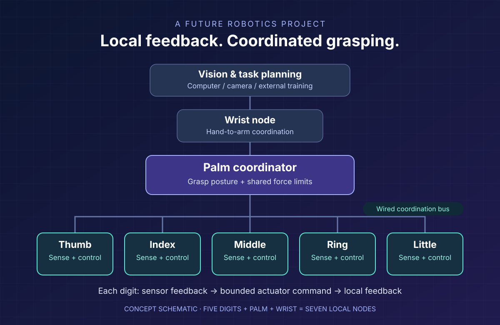

Future projects / Applied robotics / Career exploration
Robotic hands with local intelligence
What if each finger could respond to touch locally, while the palm and wrist coordinated the whole hand? A future Know & Guide project explores that idea, and the engineering skills needed to bring it to life.
Project status: this is a proposal for future investigation. The hand has not been built or tested through this project. The architecture below is a suggested starting point, with research claims distinguished from demonstrated capabilities.
A hand that senses and acts locally
Picking up a fragile object is a useful test of intelligence. A robot must find it, approach it, make contact, apply enough force to hold it and react if it starts to slip. Those jobs operate at different speeds. A planning model can choose the task; a finger controller needs to respond directly to its sensors.
The proposal is to distribute that work: a small controller for each of four fingers and the thumb, plus palm and wrist controllers. That makes seven local nodes for a hand with five digits. A computer can handle vision, training and task planning while the local nodes handle bounded movement and feedback.
This is inspired by biological control, but the engineering goal is specific: reduce the distance between sensing and action, while keeping the fingers coordinated. Flexible pads, compliant mechanisms and tendon designs can also help a hand conform to an object. The physical structure becomes part of the control solution.

Is a network inside the hand feasible?
Yes, distributed sensing and control is a feasible prototype direction. It does not require a language model in every finger. A local node can read position and contact sensors, apply a motor command within calibrated limits and report its state. The palm coordinator can select a grasp posture and manage the shared force budget.
Adding more controllers also adds work: power, wiring, synchronization, mounting space and fault handling. A controller can sit at the base of a digit rather than on the moving fingertip. Each actuator must have one command owner; several controllers cannot independently drive the same shared serial bus without an arbitration design.
The first version should use a wired control bus, with local feedback loops that keep operating when coordination messages are delayed. ESP-NOW is useful to investigate for wireless updates, but peer-to-peer messaging does not automatically provide routed mesh networking or a guaranteed deadline. Espressif documents that successful radio delivery does not guarantee application receipt. Our design recommendation is therefore to keep immediate limit enforcement local and validate every communications path. Read Espressif's ESP-NOW guidance.
Could the left thumb learn by watching a human?
That is an interesting later experiment. A practical first step is to track a human hand using a camera connected to a computer. Google's MediaPipe Hand Landmarker provides hand landmarks and handedness. Those observations could be mapped to the robot's available joints, then tested with slow, bounded movements.
A label such as LEFT_THUMB identifies the node in firmware. Its joint geometry, encoder calibration, movement limits and actuator mapping define what it can do. The label alone does not give it a body model. Human thumb motion must be translated into the robot's different mechanics, and video alone does not directly measure contact force.
There is real research worth following here. Bibin Wilson's 2026 TinyVLM preprint describes a compact vision encoder matched against text embeddings prepared offline. It is an object-recognition approach, rather than a conversational model or a demonstrated thumb-imitation controller. Its deployment table uses a 64-dimensional configuration; the ESP32-S3 timing is projected, with hardware measurements reported for MAX78000. We would need to reproduce the model on our chosen board before relying on its memory or speed estimates.
Training and deployment are also separate jobs. LiteRT for Microcontrollers, previously TensorFlow Lite Micro, runs model inference and does not support on-device training. Custom online adaptation or spiking-network learning would need separate software and experiments. For an initial prototype, train a small model externally, deploy it, measure it and keep the actuator limits independent of its predictions.
A build path that answers one question at a time
- Prove one digit. Mount a single actuator and controller on a test stand. Add position feedback and a calibrated contact sensor. Measure tracking error, force overshoot and behavior when a sensor or command goes missing.
- Coordinate a simple grasp. Add an opposing thumb and finger, then a palm coordinator. Use repeatable test objects, a shared force limit and a deliberate fault response. Losing one node can destabilize a grasp; it should trigger a tested hold, lowering or stop procedure.
- Expand to the full hand. Choose the mechanical platform, add the remaining digits and verify power capacity, bus timing and grasp repeatability. A 500 Hz loop is a design target to measure on the selected hardware, not a capability to assume.
- Add learning from demonstration. Record hand landmarks, map them to joint targets and compare learned motion against the conventional controller. More advanced adaptation comes after the baseline works.
The first useful milestone is a digit that senses contact and responds predictably. A full anthropomorphic hand and an arm can follow once that experiment earns the next stage.
Equipment, materials and realistic costs
A starter bench needs a microcontroller, a suitable actuator, position and contact sensing, a current-limited power source, a multimeter and basic assembly tools. A camera and existing computer can support demonstration tracking. Printed rigid parts, soft fingertip pads, screws, inserts and strain relief complete the mechanical side.
LEAP Hand is a useful reference, but its versions have different mechanics. The original hand uses four digits and sixteen actuators, so it is not a direct match for the proposed five-digit layout. Its published parts list gives historical August 2023 totals of about US$714 for Lite and US$1,772 for the regular version. Those figures are reference points, not current supplier quotes or the cost of our added controllers, tactile sensing and development work.
| Stage | What to include | What it establishes |
|---|---|---|
| One digit | Controller, actuator, sensors, power and test fixture | Whether local contact control works |
| Coordinated hand | Selected hand platform, extra nodes, wired bus and tactile sensing | Grasp coordination and fault behavior |
| Learning setup | Camera, computing, datasets and calibration tools | Whether demonstration improves movement |
A complete budget must include shipping, taxes, spares, printing, instrumentation and any computer or arm that is not already available. Printer and filament compatibility must be checked for the selected design. The original proposal's roughly US$780 total is a preliminary estimate, not an established price for a working adaptive hand.
The career direction: embodied AI engineering
This project brings together embedded systems, robotics, machine learning and mechanical design. Embodied AI engineer or robotics and edge-AI engineer are useful descriptions of that combination. “Morphological AI engineer” is a possible descriptive label, rather than a standardized job title or a forecast of guaranteed demand.
The skills are concrete: C/C++ firmware, sensor calibration, real-time control, communications, CAD, compliant mechanisms, model quantization and careful experiments. Someone working in this area needs to understand both a model's predictions and what happens when a motor physically acts on them.
For students or career changers, the one-digit experiment could become a strong portfolio project: show the wiring, explain the control choices, publish measured results and document the failures. Future investigations could explore assistive devices, agricultural handling or laboratory manipulation, each with its own performance and validation requirements.
That is the opportunity Know & Guide wants to explore: building intelligence that can sense and act through a physical body, beginning with a small experiment we can explain, reproduce and improve.
Sources and further reading
This article adapts the supplied Mesh Network for Robotic Hand concept discussion. External technical claims were checked against the sources below on October 8, 2026. The proposed architecture and build stages are our engineering assessment; no project performance results are claimed.
- Espressif: ESP-NOW protocol and delivery behavior
- Wilson: TinyVLM for microcontrollers, including projected benchmark limits
- Google: LiteRT for Microcontrollers workflow and limitations
- Google: MediaPipe Hand Landmarker
- LEAP Hand V1: hardware and historical parts costs and V2 hybrid rigid-soft research